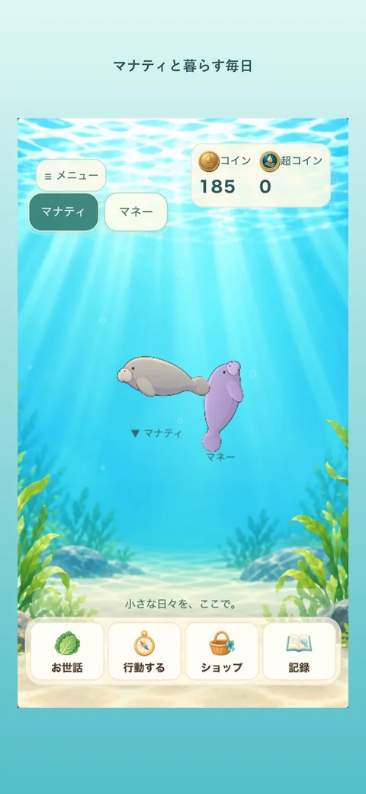

ごはんとお手入れ
キャベツやおやつをあげたり、体についたコケをきれいにしたり。おなかに触れると、ぽよんとかわいい反応も。毎日のお世話を楽しめます。
iPhoneで楽しむ、マナティ育成ゲーム
光がゆれる水辺で、
マナティと暮らそう。
「マナティの水槽」は、マナティを育てる水槽ゲームです。ごはんをあげたり、体のコケをお手入れしたり。ゆっくり泳ぐ姿を眺めながら、あなただけの水辺を育てていきましょう。
App Storeでダウンロード無料ダウンロード・アプリ内購入あり
iPhone対応／iOS 16.4以降／日本語

マナティとの暮らし
キャベツやおやつをあげたり、体についたコケをきれいにしたり。おなかに触れると、ぽよんとかわいい反応も。毎日のお世話を楽しめます。
ゲームで集めたコインで水槽の飾りを購入したり、新しいマナティをお迎えしたり。いろいろな色や柄の子に出会いながら、水辺を飾れます。
一緒に過ごしたマナティの成長や思い出を記録。育てるうちに見つかることや、水辺に隠された不思議な発見も楽しみのひとつです。
ときには、お仕事や冒険へ
マナティのお世話の合間に、操作の違うミニゲームにも挑戦できます。
アプリは無料でダウンロードできます。追加水槽や一部の本・アイテムなどにアプリ内購入があります。商品の内容と価格は購入画面で確認できます。
iOS 16.4以降のiPhone向けアプリです。App Storeからダウンロードして遊べます。Android版の配信はありません。
アプリ内の本棚で「マナティの育て方」を無料で読めます。操作方法、育成データのJSONバックアップ、購入の復元、お問い合わせ先はサポートページでもご案内しています。
小さなお世話から、マナティとの毎日がはじまります。
App Storeでダウンロード